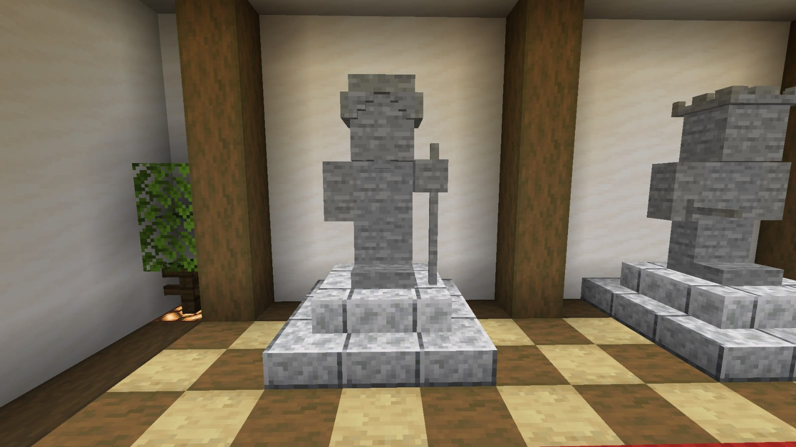
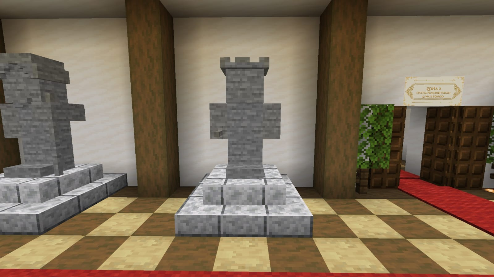
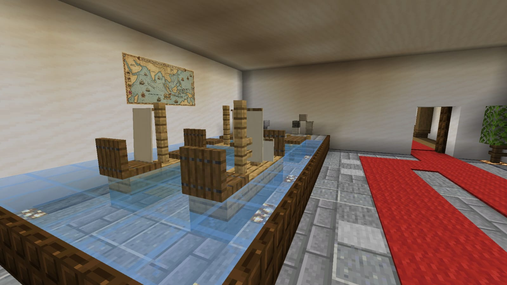
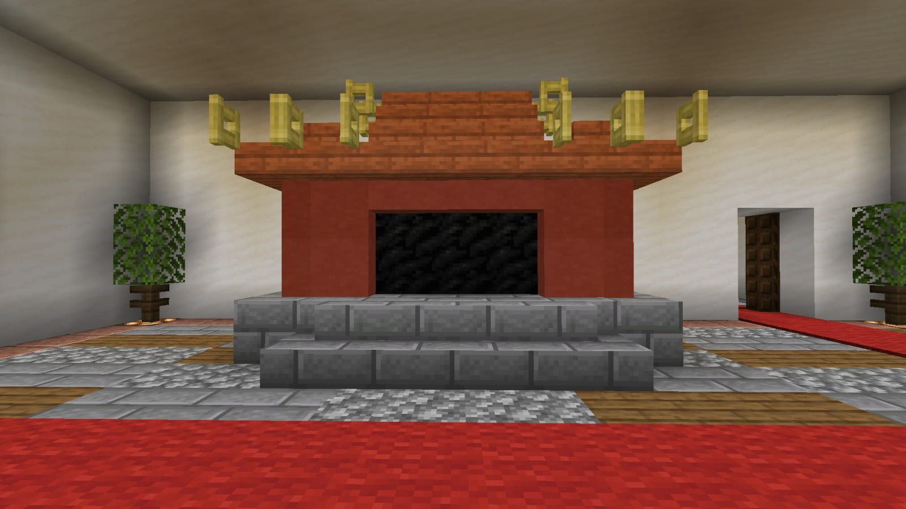
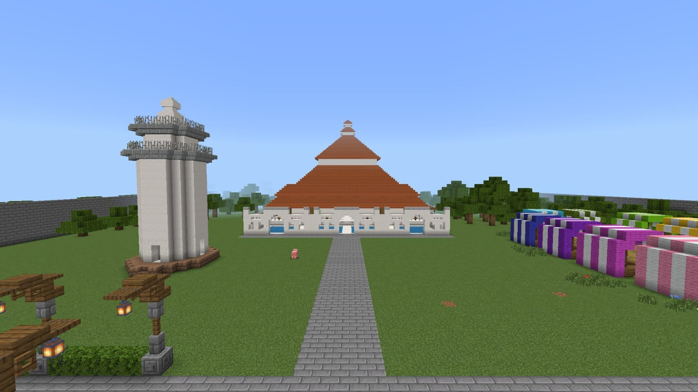
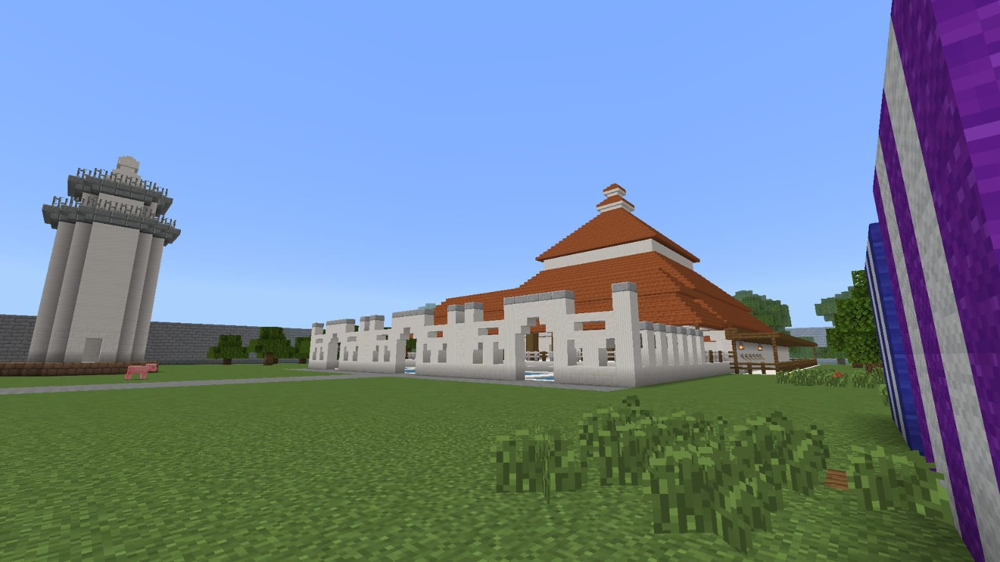

Peninggalan Sejarah Kesultanan Banten

Patung Syarif Hidayatullah atau Sunan Gunung Jati, pendiri Kesultanan Cirebon dan penyebar Islam di Jawa Barat.

Sultan pertama Kesultanan Banten yang memerintah tahun 1552-1570. Pendiri Keraton Surosowan dan pusat perdagangan Banten.

Pelabuhan Karangantu, pusat perdagangan lada internasional yang menghubungkan Banten dengan pedagang Arab, Persia, India, China, dan Eropa.

Bukti toleransi Kesultanan Banten terhadap etnis Tionghoa. Klenteng ini dibangun pada masa Kesultanan sebagai tempat ibadah bagi pedagang China.

Masjid bersejarah peninggalan Kesultanan Banten dengan arsitektur perpaduan Jawa, Eropa, dan China. Dibangun pada masa Sultan Maulana Hasanuddin.

Pemandangan lain dari Masjid Agung Banten, salah satu peninggalan Kesultanan Banten yang masih berdiri kokoh hingga saat ini.